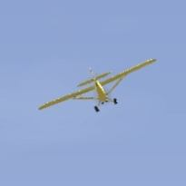
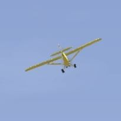

Prova spaka - Grundläggande spakstyrning av flygplan
När man styr en modell gäller alltid att spakrörelserna motsvarar hur det rörelsen är sett från flygplanet och inte mot marken.
Högerspaken på sändaren fungerar på samma sätt som styrspaken i ett riktigt flygplan:
– Drar man spaken mot sig börjar planet stiga, för man spaken framåt börjar planet sjunka (Höjdroder).
– För man spaken åt vänster lutar planet åt vänster, och åt höger lutar det åt höger (Skevroder).
Vänsterspaken reglerar gasen (uppåt = mer gas) samt sidorodret i sidled, vilket motsvarar pedalerna i ett riktigt flygplan.
Första gången man provar brukar det vara klokt att låta bli att använda vänsterspaken och i stället koncentrera sig på höger spak. Många modeller kan flygas på detta sätt genom att ställa in en ”lagom” gas och acceptera att svängarna inte blir helt perfekta.
Alla modeller uppför sig inte på samma sätt, och instruktören du flyger med kan ha programmerat in mixerfunktioner för att underlätta för en nybörjare. Många nybörjarmodeller liknar dock varandra, så se detta som en mycket förenklad och generell guide. Lyssna alltid på den du flyger dubbelkommando med och hur just den modellen fungerar.
Tänk på: Gör alltid små lugna spakutslag och använd tiden. Snabba, stora utslag gör allt svårare. Jämför, en bil kan svänga 90 grader med både ett lite rattutslag, mer tid och större kurva.

Stiga och falla
Bilden till höger visar ett flygplan som flyger bort från dig, något åt höger.
Spaken är i neutralläget/mitten.
Drar man spaken mot sig stiger planet och lutningen ökar så länge man håller spaken dragen.
Tänk på: Hastigheten sjunker om man inte ökar gasen, så stig måttligt med fast gas.

För att återgå till planflykt måste man föra spaken framåt igen. Om man trycker fram spaken för länge börjar planet i stället sjunka.
Som bilden visar kan det på lite avstånd vara svårt att avgöra om modellen flyger parallellt med marken eller sjunker, eftersom man ser planet underifrån. Jämför man första bilden så ser man att den faller. Modeller ser mindre ut då den är längre bort.
Tänk på: Hastigheten ökar om man sjunker så man gör minska gasen, så dyk inte för snabbt med fast gas.


Vänstersväng
Man kan lätt tro att man svänger ett flygplan åt vänster genom att bara dra spaken åt vänster, ungefär som när man styr en bil. Så fungerar det inte riktigt. Ett flygplan svänger främst med höjdrodret. Först lutar man planet åt vänster, sedan ger man höjd för att svänga runt, och till sist planar man ut planet igen. För att planet inte ska ändra höjd och för att riktningen ska bli korrekt krävs precision, rätt spakutslag och riktning vid varje tillfälle.
Nedan beskrivs grunderna i en vänstersväng.
1)
Modellen flyger bort från dig och lutar i detta fall svagt åt höger.
Inled vänstersvängen genom att luta planet åt vänster. För spaken lite åt vänster och ge modellen tid att reagera, i stället för att dra mer i spaken.

2)
Modellen har nu börjat luta lagom mycket åt vänster. Den börjar samtidigt tappa lite höjd eftersom den effektiva vingytan mot marken minskar.
Höjdrodret kommer nu att vara både ”uppåt” och åt vänster sett från marken, eftersom modellen lutar.
Börja därför en spakrörelse som innebär mindre vänster (sluta luta mer) och övergå till enbart höjd för att genomföra själva svängen.
Om höjdutslaget matchar modellens lutningsvinkel och hastighet kommer höjden att hållas trots svängen.
 

3)
Håll höjdrodret kvar för att fullfölja svängen, fram till strax innan den riktning du vill flyga i.
Tänk på: Tappar man höjd kan man ge mer höjd som då också resulterar i en kraftigare sväng och behöver mer gas. Inför nästa sväng, luta planet mindre.

4)
Svängen närmar sig sitt slut och det är dags att räta upp modellen.
Börja en spakrörelse som innebär mindre höjd (sluta svänga) och övergå till höger för att luta tillbaka planet till planflykt.

5) Håll spaken i detta läge en kort stund tills vingarna åter är parallella med marken.
6)
För tillbaka spaken till neutralläge. Modellen flyger nu stabilt vidare i den nya riktningen.
Tänk på: Har du ändrat höjd ? Justera detta nu (lugnt) innan nästa sväng.

Högersväng
Man gör på samma sätt som in en vänstersväng, byta bara vänster mot höger och höger med vänster.
Höjden är denna samma.